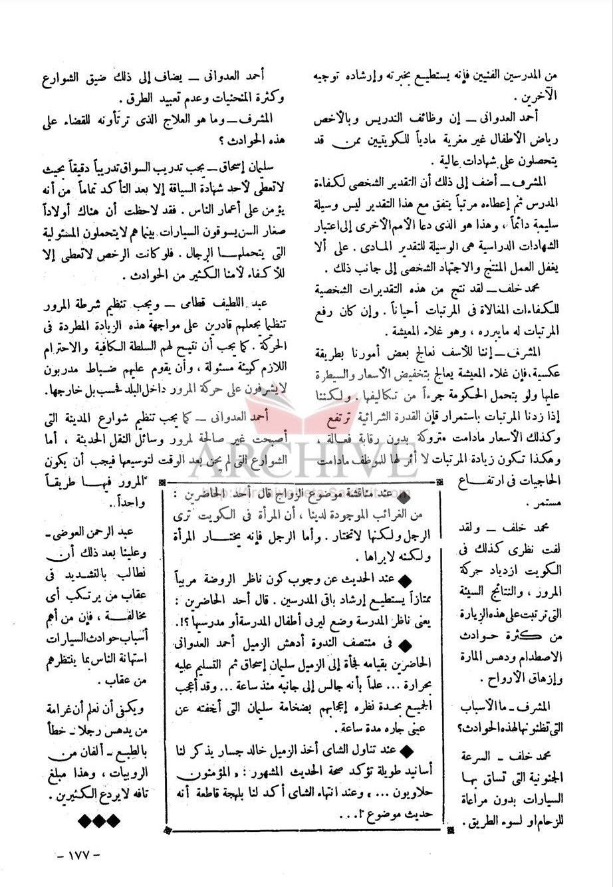

Issue 8, 1 September 1948 · Pages from Al-Ba’tha, the monthly of Bait Al-Kuwait in Cairo, second volume, issue 8 (1 September 1948), «Nadwat Al-Ba’tha» by Abdulaziz Hussein, reprinted by the Center for Research and Kuwaiti Studies, 1997, pages 176 and 177
Al-Ba’tha seminar, 1948: Abdullatif Al-Qatami on how Kuwait has changed
What it is
A seminar of Kuwaiti students just back from a visit home after several years away, held at the house of the supervisor, Abdulaziz Hussein. Abdullatif Qatami is among those present. He says new buildings in Kuwait were planned without trained engineers, keeping to local tradition and above all to the seclusion of women; that some Kuwaitis take only the surface of modern life; that every kindergarten should be headed by a skilled teacher who can guide the others; and that the traffic police must be organised and trained to cope with the fast rise in cars.
Why it matters
A contemporary record of Abdullatif Abdulwahab Al-Qatami as one of the Kuwaiti students in Cairo in 1948, in his own words.
Who is meant
The index of Al-Ba’tha gives his full name, Abdullatif Abdulwahab Al-Qatami, for pages 176, 177 and 179 of this volume.
Page copies


Sources
Abdulaziz Hussein, «Nadwat Al-Ba’tha», Al-Ba’tha, issue 8, 1 September 1948, reprinted by the Center for Research and Kuwaiti Studies, Kuwait, 1997, pages 176 and 177
How this text was made: The cover of this volume and page 179, which the index also lists for him, have not been sent.
Open in the interactive site